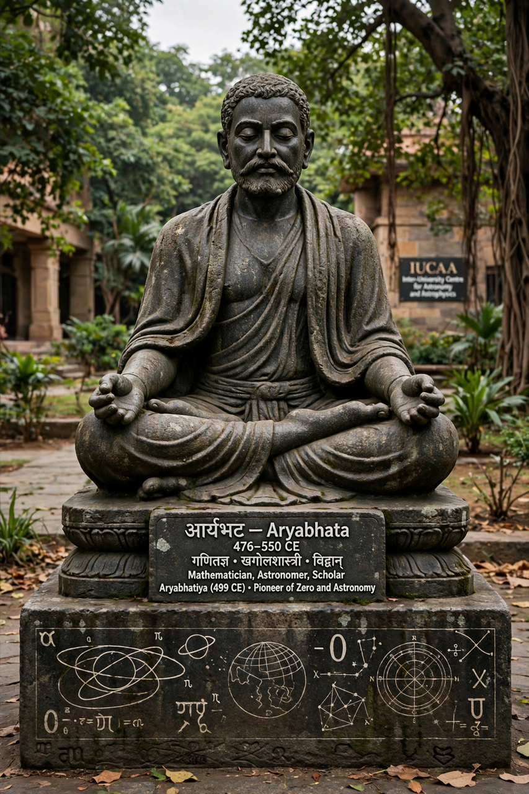

Aryabhata

Born: 476 CE, probably in the Gupta realm (Kusumapura/Pataliputra region)
Died: c. 550 CE
Work: Aryabhatiya (499 CE)
Fields: mathematics, astronomy
Aryabhata (476–550 CE) was a pioneering Indian mathematician and astronomer of the Gupta age. His surviving treatise, the Aryabhatiya, composed in verse in 499 CE when he was 23, laid out a system of mathematics and astronomy that shaped Indian science for a millennium and influenced Islamic and European learning.
Mathematics
The Aryabhatiya covers arithmetic, algebra and trigonometry in 123 verses. Aryabhata gave an approximation of π as 3.1416 ("add four to one hundred, multiply by eight, and then add sixty-two thousand"), presented a table of sines at intervals of 3°45′, solved linear indeterminate equations by the pulverizer method (kuttaka), summed arithmetic and geometric series, and worked within the decimal place-value system with rules implying familiarity with zero as a number in computation. His alphabetic numeral notation encoded large numbers compactly.
Astronomy
Aryabhata proposed that the Earth rotates on its axis — explaining the apparent daily motion of the stars by the analogy of a passenger in a boat seeing the shore move — computed the sidereal day and the lengths of planetary periods with remarkable accuracy, gave the Earth's circumference as about 39,968 km, and explained eclipses scientifically as shadows rather than mythological events, enabling their prediction. His value for the length of the year was 365.25868 days.
Legacy
Commentators such as Bhaskara I expanded his work, and his methods passed to Baghdad, where his book was translated as the Zij al-Arjabhar and influenced al-Khwarizmi. India's first satellite (1975) and a lunar crater bear his name.
See also: Gupta Empire · Edicts of Ashoka